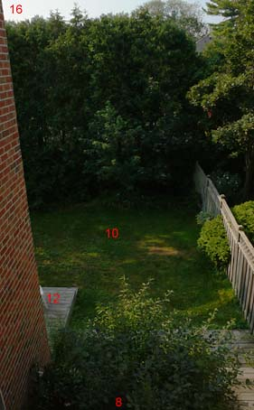
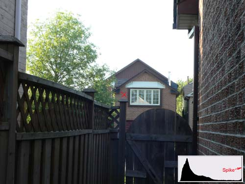
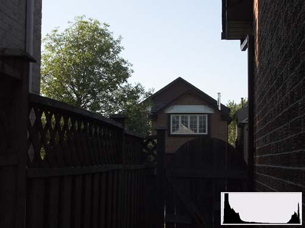
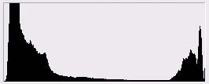
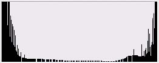
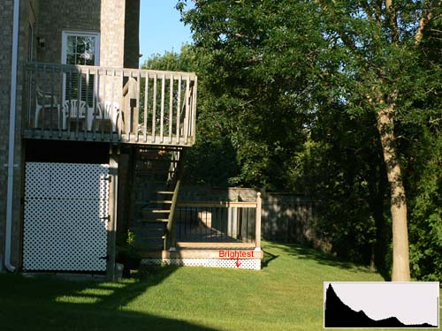
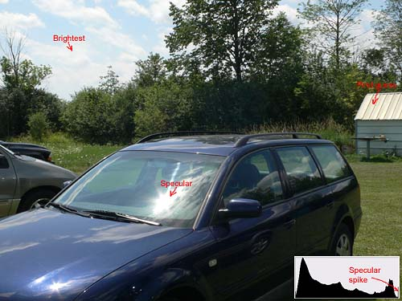

|
Quick, Accurate High Contrast Exposures for Digital CamerasVersion 1.3, © 2006 by Dale Cotton, all rights reserved Note: this tutorial requires a digital camera with spot-metering plus aperture priority or manual mode. It also requires the willingness to stoop to some rudimentary post-processing. You can safely ignore this tutorial if your camera has 10 or 15 stops of latitude and/or telepathic multi-metering. The problem Fig. 1: Typical high contrast scene. Exposure values in red. High contrast, or contrasty, light is most often found after dawn and before twilight on a sunny day with both sky and shadow areas in the same frame, as in Fig. 1. High contrast can also occur in other circumstances, such as shooting indoors with a daylit window in the frame. Ultimately, any shot in which your camera wants to turn non-white areas to pure white (Fig. 2) and/or shadow areas to inky black (Fig. 3) is high contrast. The novice or casual photographer puts the camera in full automatic mode and is happy to get any shot in which the subject is recognizable. A smaller number of camera users get bit by the photography bug, then gradually develop a sense of what a competent photograph should look like. One quickly learns first that one of the biggest no-nos in photography is the blown highlight and second that it can be one of the trickiest problems to avoid.  Fig. 2: Blown Exposure using multi-metering. Red X marks focal point. It's hard to find a recent model camera that doesn't have pattern/multi metering. I have yet to use one that can't be easily tricked into massively blowing highlights in contrasty light, as happened in Fig. 2. The problem that camera engineers face is that the overriding goal for metering has to be that the "subject" has to be "properly" exposed. But what is the subject of Fig. 2 and how would you write software that can examine the several million RGB numbers contained in a typical image, then reliably make that determination? In general, the answer that camera engineers fall back on is that whatever the auto-focus area is pointing at is the "subject"; and proper exposure means assigning the subject a middle tone. In Fig. 2 I focused on the brick house across the street; specifically, on the bricks just left of the white window, marked with a red X. So the brick facade of that house is happily well-exposed - meaning assigned a middle tonality - while the entire sky has just as happily been pushed to pure white. Digital cameras typically have between 7.5 and 8.5 stops latitude (DR); a scene like this can have anywhere upwards of 9 stops latitude; and the JPEG engine in most digital cameras usually grabs the 6 stops safely above the noise floor. Now here's what the same scene "should" look like out of the camera:  Fig. 3: Manual exposure I say it "should" look like this, even though everything but the sky is too dark, only because this is the brightest overall exposure that doesn't blow the sky. I can easily apply an S-curve to Fig. 3 to darken sky and brighten non-sky portions of the scene:
Fig. 4: Manual exposure + elementary post-processing ... but I have no such option for recovering the blown sky in Fig. 2. The solutionThe exposure used for Fig. 3 was not achieved via complex calculations and a $1000 Sekonic 758D handheld digital spot meter. It took about 1 second and used only the features found in any "prosumer"-grade digicam. In this case the camera was a Panasonic LX1. The procedure is simplicity itself: In non-contrasty light, trust your multi-meter. In contrasty light spot meter the brightest portion of the scene then stop down by X. (We'll get to X in a moment.) The job of a spot meter is to provide an exposure value that will place the small metered area at middle brightness (so-called middle grey or Zone V from the days of B&W photography). But if the scene is high contrast, we don't want the brightest portion of the scene to be medium-bright. We typically want it as bright as possible just short of becoming a blown highlight. In histogram-speak we want it to snug up to the right edge of the histogram without going past it. The histogram inset in Fig. 3 is a perfect example of what this looks like. Here's a closer look:  Fig. 5: Typical snug-to-right histogram of contrasty scene Notice there are values from beginning to end - from 1 to 254 - but no significant spike at either 0 or 255. A spike at either end means there were tonal values in the scene that got smashed down to pure black or pure white in the captured image, like so:
Fig. 6: Histogram with right-hand spike That thin vertical line at the right edge looks innocuous and can easily be overlooked; but it's all that's left of a wealth of lost detail. Another histogram possiblitity is not so much a spike as a mountain at either end cut in half vertically, like so:  Fig. 7: Twin peaks histogram = scene dynamic range exceeds camera latitude (The flat central plain in Fig. 7 is not at issue; the central region could take any shape.) Whether spike at either the 0 or the 255 end, or truncated mountain at both ends, the message is that the dynamic range of the scene has exceeded the abilitity of the camera to record it. The human eye (when combined with the visual cortex) has no such limitation, so a print of a scene clipped by the limited latitude of camera or film stock will look less than realistic to the eye (see Fig. 2). That may be the acme of visual honesty but it is not the illusion of eyeball reality that we have come to attribute to competent photography. The unaided camera has failed us; the only recourse is to expose right then post process as needed (See Fig. 4). X marks the spot
Fig. 8: Typical exposure series for finding X The next step is to determine X for your particular camera, where X is distance between the blown highlights mark and the exposure level your camera suggests via its spot or centre-weighted meter. Experience shows that this is not simply the latitude (DR) of your camera divided by two. The latitude of my LX1 is somewhere around 7.5 stops, but the spot meter weighs in at 1.5 stops under the highlight clipping point. Fortunately, 'tis simplicity itself to find your camera's X value. Here's the drill:
That exposure compensation value is X. X happens to be 1.5 stops on my LX1 and 3.0 stops on my Pentax DS. (You only have to do this once per camera and it isn't rocket science.)  Fig. 9: Brightest portion of scene is pure white paint under the deck, metered at +1 2/3 with LX1, and allowed to spike. So let's say you're shooting with a Nikon D50, you've found that X=3.0 for your camera (I have no idea what the actual X would be for a D50), now you want to put this to use. We know that the concept is to spot meter the brightest portion of the scene then add 3.0 stops to whatever the meter recommends. Since exposure compensation on the D50 is a whopping -/+ 5 stops, one can use aperture or shutter priority, leave exp. comp. set to +3, press the AE Lock button when the meter is pointed at the brightest (non-specular) spot in the scene, then recompose and shoot as desired. Other cameras have the more typical -/+ 2 stops exp. comp., so if X is greater than 2.0, one would have to use manual mode, dialing in either shutter or aperture, over the meter's recommendation. Putting it all togetherExample 1: Pentax D series (X=3.0)
 Fig. 10: First guess was shed roof but sky proved brighter; specular glare on windshield ignored. Example 2: Panasonic DMC-LX1 (X=1.5)
Both these procedures sound much more complicated written out than they actually are. A bit of practice will make them second nature. Generally, the most tedious part is switching back and forth between this and multi-metering for action shots. Hopefully, you can hit on some equally efficient method for achieving the same results with your own model camera. If so, e-mail it to me and I'll append it to this tutorial and include your name as discoverer. (For a more comprehensive exploration of metering theory and practice, see my tutorial: Existing Light Exposure Metering.)
|